Aula 4
Fontes primárias, pastas, links e conferência
Documentos, pasta no Drive e índice com links.
Conferir uma planilha contra TSE e PDFs.
Exemplos dos painéis do Data Fixers.
Técnicas e prompts para usar sempre.
Caso 1 · Parte 1
Vila COP: contratos, financiamento e trabalho de presos
A última frase do pedido é a mais importante para a checagem: ela obriga a IA a entregar os arquivos, não só a resposta.
Notícias para achar nomes de órgãos, programas e números.
Diário Oficial, portal de compras (PNCP), site da secretaria.
PDFs completos, página por página.
Pasta no Drive e índice com link para cada arquivo.
Pedir um balanço no meio do caminho: o que já foi achado, o que falta e o que não abriu.
Sites do governo do Pará não abriam fora do Brasil. Com VPN brasileira, a IA conseguiu baixar o contrato e o relatório da secretaria.
“Use documentos oficiais, não só notícias.”
“Baixe cada documento que você usar.”
“Diga a página e o trecho de cada número.”
“Liste o que você não encontrou.”
Caso 1 · Parte 2
“25 pessoas privadas de liberdade (...) trabalham na confecção e montagem de quase 3 mil móveis.”
Não diz quanto custou, quem pagou nem quanto os presos receberam.
2.796 móveis. R$ 2.023.584,63. Dinheiro do convênio com a Itaipu, depositado no Fundo do Trabalho Penitenciário.
Assinado pelos secretários, com plano de trabalho e preços por m².
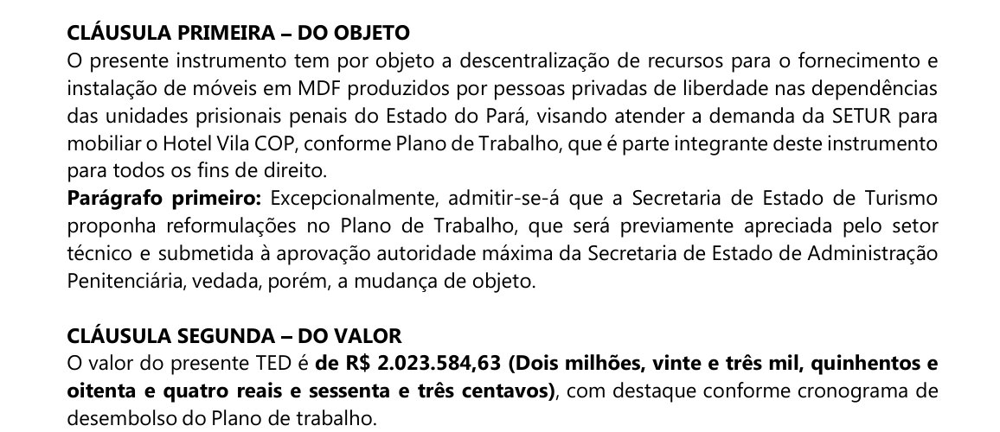
TED 01/2025 Setur–Seap, página 1
| Fonte | O que tem | Como foi usada |
|---|---|---|
| Diário Oficial do estado | Extratos de contratos, convênios, portarias, leis | Leitura de todas as edições de ago/2024 a jun/2026 procurando “Vila COP” |
| PNCP (pncp.gov.br) | Editais e contratos com os PDFs assinados | Busca por “Vila COP” e “Vila Líderes”: 38 registros |
| Site do órgão | Relatórios de gestão, convênios, termos | Contrato com os presos e relatório de 2025 da Seap |
| Wayback Machine | Cópias antigas de páginas | Agência Pará, fora do ar no período eleitoral |
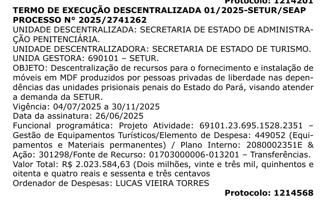
Diário Oficial do Pará, 27/06/2025, p. 97
Ligar VPN com saída no Brasil.
Procurar a página no Wayback Machine (web.archive.org).
Pedir leitura do texto por OCR e conferir na imagem.
Registre no índice qual caminho foi usado para cada arquivo.
Caso 1 · Parte 3
DOE-PA_2025-06-27_Extrato_TED_01-2025.pdf
Fonte, data e assunto no nome. Dá para achar sem abrir.
Os PDFs originais ficam salvos. Se o site sair do ar, a prova continua na pasta.
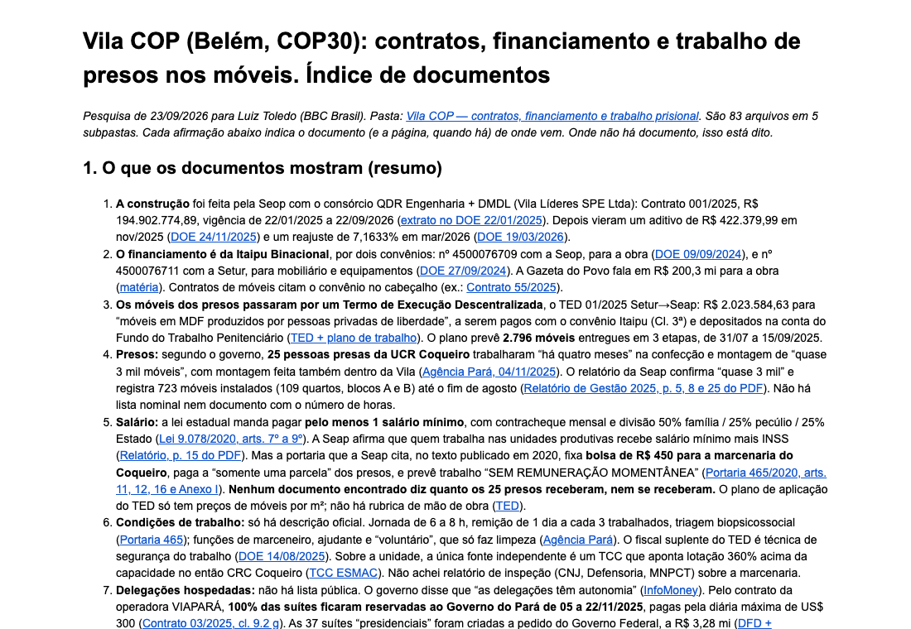
Índice no Google Docs: resumo, link e página de cada documento
Pelo conector do Google Drive.
Para a pasta do Drive sincronizada no computador.
Cada arquivo tem um código no Drive. O link é drive.google.com/file/d/código.
Texto com link em cada trecho, enviado como Google Docs.
Para quem não usa código: peça “no índice, coloque o link do arquivo e a página de onde saiu cada número”.
Caso 1 · Parte 4
1Clique no link.
2Vá à página indicada.
3Compare o número ou o trecho.
4Veja a data e quem assina.
5Classifique: documento, declaração ou lacuna.
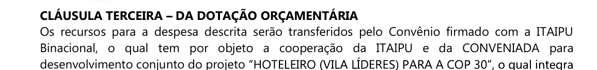
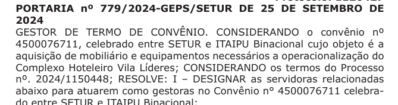
Contrato diz “convênio com a Itaipu”. O Diário Oficial mostra o número do convênio: 4500076711.
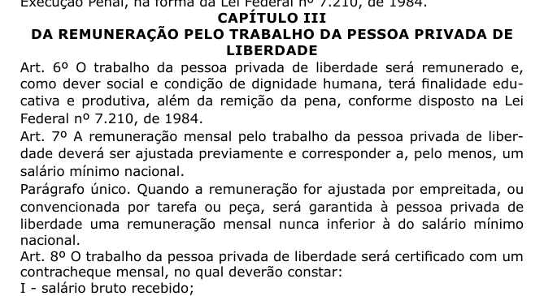
Lei estadual 9.078/2020: pelo menos 1 salário mínimo e contracheque mensal
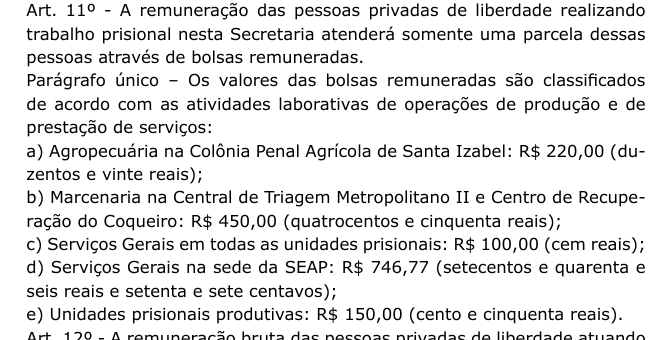
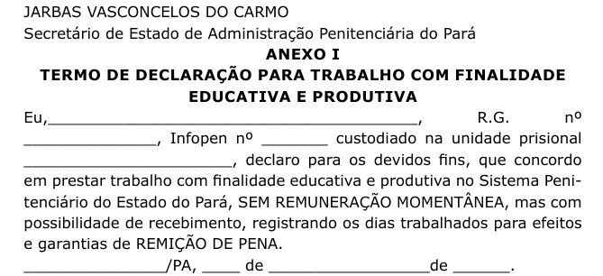
Bolsa de R$ 450 na marcenaria do Coqueiro, para “somente uma parcela”. Termo assinado pelo preso: “sem remuneração momentânea”.
Nenhum documento encontrado mostra quanto os 25 presos receberam, nem se receberam.
A lei, a portaria e o relatório da secretaria dizem coisas diferentes. O plano de trabalho do contrato não tem linha de pagamento de mão de obra.
Próximo passo: pedir os contracheques por Lei de Acesso à Informação.
Contrato de R$ 2,02 mi.
2.796 móveis previstos.
Convênio Itaipu nº 4500076711.
“25 presos” e “quase 3 mil móveis” (governo).
“Remunerados com salário mínimo” (relatório da Seap).
Quanto cada preso recebeu.
Condições na marcenaria (sem inspeção independente).
Quem se hospedou.
1Pedir fonte primária.
2Baixar e guardar cada arquivo.
3Índice com link e página.
4Abrir e comparar.
5Dizer o que não foi encontrado.
Caso 2 · Parte 1
Planilha de pesquisas eleitorais por estado
A planilha foi feita primeiro no ChatGPT. Depois pedi ao Claude para refazer o processo e checar o resultado.
Tende a confirmar o que já está lá.
Tem números próprios para comparar. Diferença vira alerta.
“Não substitua nada” protege o original. As correções vão para outro lugar.
Pedir o caminho, não só a resposta. Assim você refaz a checagem sozinho.
Caso 2 · Parte 2
Portal de Dados Abertos do TSE: votacao_candidato_munzona_2022.
1º turno, presidente, Lula e Bolsonaro.
Votos por estado e percentual dos votos válidos.
Brasil: Lula 48,43%, Bolsonaro 43,20%. Bate com o oficial.
Na primeira versão, os resultados de 2022 vinham da Wikipédia. Pedi para ir aos dados originais do TSE.
DADOS ABERTOS DO TSECaso 2 · Parte 3
quaest.com.br/wp-json/wp/v2/media?mime_type=application/pdf&per_page=100
Do mais novo para o mais antigo.
QUAEST2SP0809.pdf
Rodada 2, São Paulo, divulgada em 08/09.
Cmd+F: “estimulada para presidente”.
Com Pablo Marçal.
Sem Marçal. É o que vale, porque ele foi substituído.
Número da página de cada estado.
Os números estão em imagem, não em texto. A busca acha o título; o número se lê no gráfico.
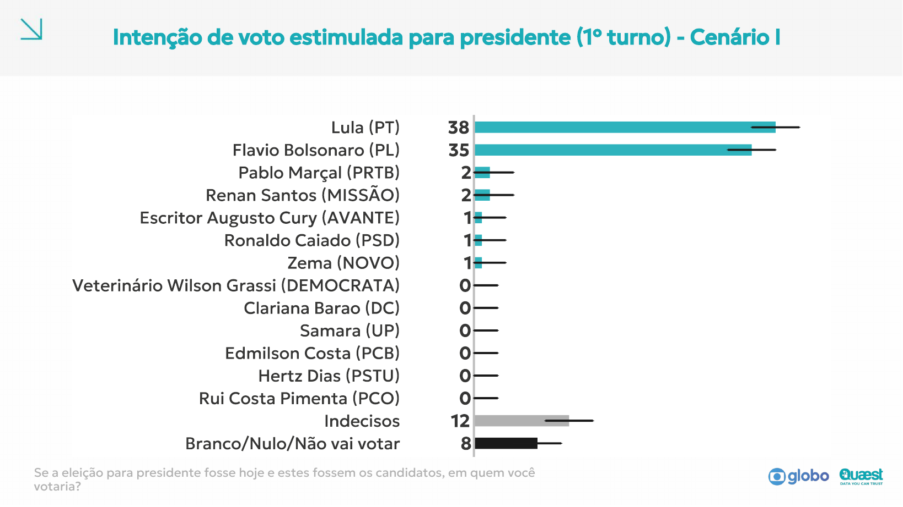
Amazonas: Cenário I (p. 108), Flávio 35% · Cenário II (p. 116), Flávio 33%
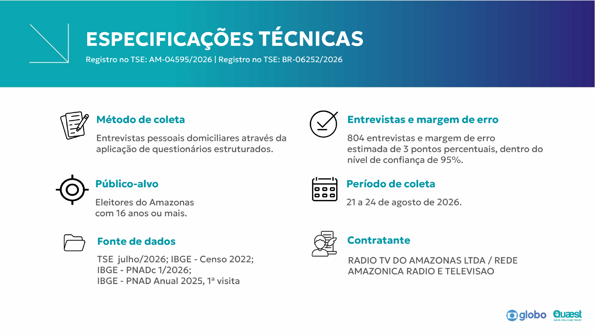
Registro no TSE, amostra, margem de erro, período de campo e contratante
Buscar pelo número (ex.: BR-06252/2026). Clicar na lupa para ver campo, divulgação e plano amostral.
PESQELEToda pesquisa divulgada tem registro. Sem registro, não use.
Sem PDF no site. Resultado publicado no g1, com número de registro. Registro confirmado no TSE.
176 registros da Quaest em 2026 no TSE, nenhum no Piauí. Usado o Datafolha como referência, identificado como tal.
O TSE já mostrava a 3ª rodada registrada, com data de divulgação. A planilha envelhece em dias.
Caso 2 · Parte 4
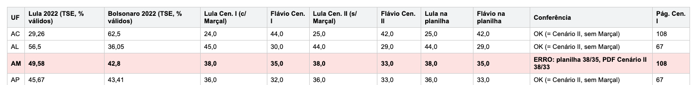
Uma linha por estado: número do TSE, os dois cenários da Quaest, o número da planilha, o resultado da conferência e a página do PDF.
Amazonas: Flávio com 35% (Cenário I). O certo é 33% (Cenário II). Saldo +5, não +3.
2022 bate com o TSE nos 27 estados. Quaest bate em 23 estados.
PB e SE vêm do g1. Registros lidos em letra pequena: conferir dígitos.
1Levantar os dados antes de ver os do outro.
2Usar o arquivo oficial e testar o total.
3Anotar página e cenário de cada número.
4Confirmar o registro no TSE.
5Corrigir em arquivo separado e dizer a fonte.
Exemplos
Quem lê precisa conseguir conferir sem pedir nada a você.
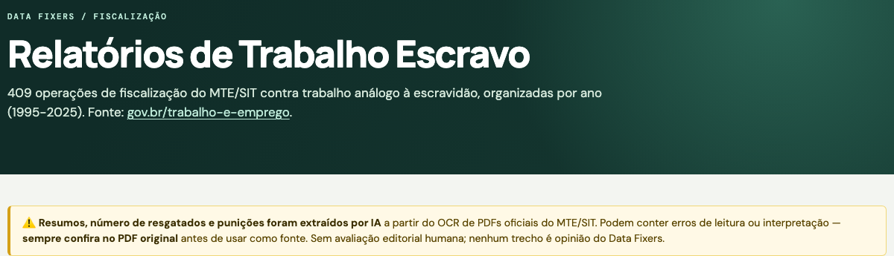
Fonte no topo, com link. Aviso: resumos e números foram extraídos por IA do PDF oficial e podem ter erro. “Sempre confira no PDF original.”
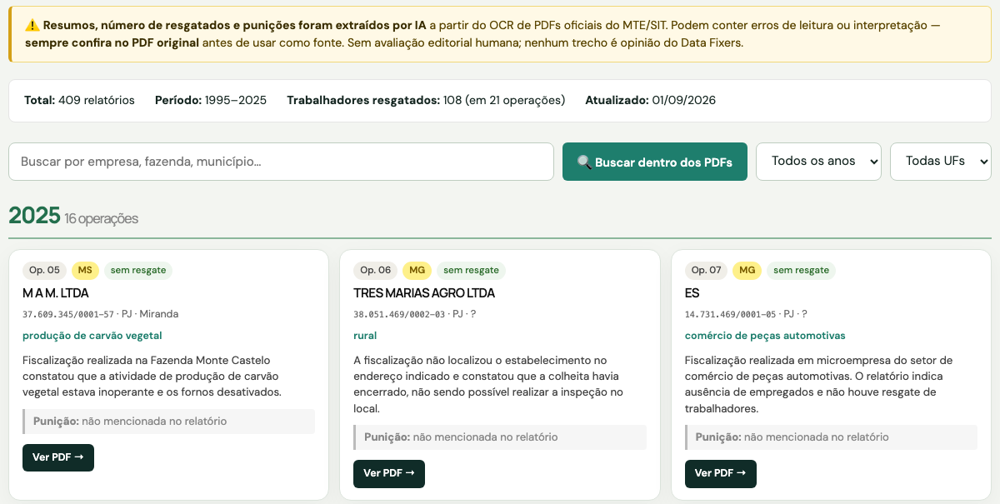
O botão “Ver PDF” abre o relatório oficial no gov.br. O resumo é da IA; a prova é o PDF.
ABRIR PAINEL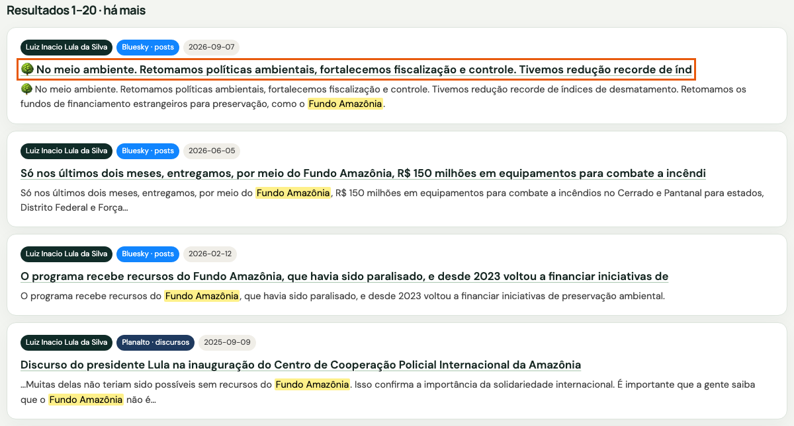
Busca por “fundo amazônia”. Cada título abre o post no Bluesky ou o discurso no site do Planalto, com data e fonte marcadas.
ABRIR LULÔMETROCada número, fala ou resumo leva ao documento de onde saiu.
Nome do órgão e endereço no topo da página.
Diga o que foi feito por IA e o que foi conferido por pessoa.
Quando os dados foram coletados e atualizados pela última vez.
Técnicas
Peça a citação literal e procure com Cmd+F no PDF. Se não achar, não use.
A IA pode inventar endereço ou apontar para página que não diz aquilo.
Some as partes e compare com um número oficial conhecido.
Número alto ou baixo demais? Desconfie e procure o documento.
Peça o caminho (“qual link eu abro?”) e repita a busca você mesmo.
Em tabela grande, confira 10 linhas ao acaso contra a fonte.
Peça a outra IA, ou a outra conversa, para achar erros na primeira resposta.
“O que você não conseguiu confirmar? Onde pode ter errado?”
A pesquisa de agosto já tinha rodada nova registrada em setembro.
CNPJ na Receita, pesquisa no TSE, contrato no Diário Oficial.
Votos válidos e intenção de voto não se comparam direto.
Documento, declaração ou lacuna. Diga qual é qual no texto.
1Fonte primária, não só notícia.
2Arquivo baixado e guardado em pasta.
3Link e página para cada afirmação.
4Abrir, comparar e testar os números.
5Dizer o que é prova, o que é declaração e o que falta.